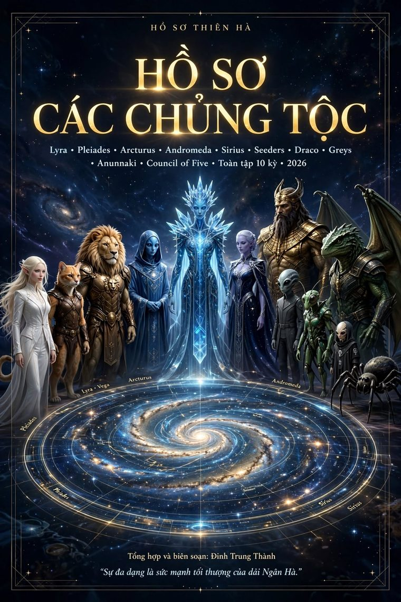

Chuyên đề
9 tuyến truyện, 100 kỳ. Bấm vào một chuyên đề để xem danh sách kỳ.

Tiền Sử Thiên Hà
Khởi nguyên Vũ trụ, Lăng Kính Lyra, các Đấng Sáng Lập và cuộc Đại Di Cư vĩ đại.
10 kỳ →
Hành Trình Thiên Hà
Các nền văn minh thiên hà, Orion, Atlantis — Lemuria và cuộc chiến di truyền.
10 kỳ →
Dòng Máu Anunnaki
Nibiru, Enki — Enlil, di sản 12 chuỗi DNA và ma trận tần số 3D.
10 kỳ →
Văn Minh Lòng Đất
Trái Đất rỗng, Agartha, Telos, Shambhala và mạng lưới căn cứ ngầm.
10 kỳ →
Chương Trình Không Gian Bí Mật
SSP, Solar Warden, ICC, Looking Glass và cuộc giải phóng Hệ Mặt Trời.
10 kỳ →
Hòm Không Gian Cổ Đại
Space Arks dưới đáy đại dương, Nam Cực, Mặt Trăng và Sao Hỏa.
10 kỳ →
Hồ Sơ Các Chủng Tộc
Lyra, Pleiades, Arcturus, Sirius, Draco, Greys và Hoàng gia Anunnaki.
10 kỳ →
Khoa Học & Công Nghệ
Stargates, động cơ warp, med-beds, zero-point energy, vũ khí tần số.
10 kỳ →
Cẩm Nang Tâm Thức Vũ Trụ
Tuyến tùng, luân xa, sóng não, DNA 12 sợi, thể vía và tần số 5D.
10 kỳ →
Lịch Sử Bị Che Giấu & Nền Văn Minh Cổ Đại
Lemuria, Atlantis, Đại Hồng Thủy, Khem, Great Tartaria, Mud Flood, Space Arks, NWO và sự thức tỉnh.
10 kỳ →